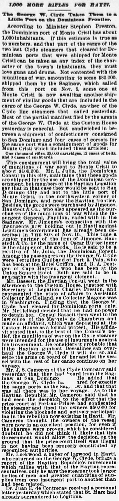
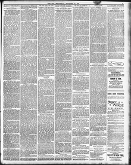

See the full pageVer la página completaBesides, the goods wot e purchased byJimenos, Haustedt ,t Co., whoAdemás, las mercancías fueron compradas por Jimenez, Haustedt y Cía., quienes
The newspaper reported that goods and munitions of war were purchased by Jimenos, Haustedt & Co., whose junior partner Oscar Ritterlinger shipped the goods, with connections to insurgents in Hayti. Haytian Consul Bassett and Secretary of Legation Charles Preston met with Assistant Collector McClelland to protest the departure of the George W. Clyde, but McClelland decided he lacked the power to detain the vessel because it had cleared for Dominican ports only, prompting Consul Bassett to file a formal affidavit of protest.El rotativo dio cuenta de la adquisición de mercancías y pertrechos de guerra por la casa Jimenes, Haustedt & Co., cuyo socio menor Oscar Ritterlinger despachó los géneros, vinculados con los rebeldes de Haití. El cónsul haitiano Bassett y el secretario de legación Charles Preston comparecieron ante el recaudador adjunto McClelland para impugnar el zarpe del George W. Clyde, pero McClelland resolvió que carecía de facultades para retener la nave por hallarse despachada exclusivamente para puertos dominicanos, procediendo el cónsul Bassett a formalizar una declaración jurada de protesta.
FULL TEXT:TRADUCCIÓN:
1,000 MORE RIFLES FOR HAYTI.1,000 RIFLES MÁS PARA HAITÍ.
The George W. Clyde Takes Them to a Little Port on the Dominican Frontier.El George W. Clyde los lleva a un pequeño puerto en la frontera dominicana.
According to Minister Stephen Preston, the Dominican port of Monte Cristi has about 1,000 inhabitants. If this estimate is true as to numbers, and that part of the cargo of the two last Clyde steamers that cleared for Dominican ports that were shipped for Monte Cristi can be taken as any index of the character of the town's inhabitants, they must love guns and drums. Not contented with the munitions of war, amounting to some $80,000, shipped them by the Saginaw, which sailed from this port on Nov. 5, some one at Monte Cristi is now awaiting another shipment of similar goods that are included in the cargo of the George W. Clyde, another of the Clyde line steamers that sailed yesterday.Según el Ministro Stephen Preston, el puerto dominicano de Monte Cristi tiene unos 1,000 habitantes. Si esta estimación es cierta en cuanto a números, y esa parte de la carga de los dos últimos vapores Clyde que despacharon para puertos dominicanos que fue embarcada para Monte Cristi puede tomarse como índice del carácter de los habitantes del pueblo, deben amar las armas y los tambores. No contentos con las municiones de guerra, que ascendían a unos $80,000, embarcadas para ellos por el Saginaw, que zarpó de este puerto el 5 de noviembre, alguien en Monte Cristi está ahora esperando otro envío de mercancías similares que están incluidas en la carga del George W. Clyde, otro de los vapores de la línea Clyde que zarpó ayer.
Most of the partial manifest filed by the agents of the George W. Clyde at the Custom House yesterday is peaceful. But sandwiched in between a shipment of confectionery consigned to San Domingo and four cases of corsets for the same port was a consignment of goods for Monte Cristi which included these articles:La mayor parte del manifiesto parcial presentado por los agentes del George W. Clyde en la Aduana ayer es pacífica. Pero intercalado entre un envío de confitería consignado a Santo Domingo y cuatro cajas de corsés para el mismo puerto había un envío de mercancías para Monte Cristi que incluía estos artículos:
One thousand rifles, 25,000 cartridges, 12 cases of belts, and 3 cases of scabbards.Mil rifles, 25,000 cartuchos, 12 cajas de cinturones, y 3 cajas de vainas.
This consignment will bring the total value of munitions of war sent to Monte Cristi to about $100,000. Mr. L. Julia, the Dominican Consul in this city, maintains that these goods are shipped for the use of the Dominican Government, but members of the Haytian Legation say that in that case they would be sent to San Domingo City and not to the little port of Monte Cristi, in the northwestern corner of San Domingo, and near the Haytian frontier. Besides, the goods were purchased by Jimenes, Haustedt & Co., who also appeared as the purchasers of the munitions of war which the insurgent General, Papillon, sailed with in the Saginaw. Mr. Jimenes's connection with the insurgents now holding out in Hayti against Légitime's Government has already been described in THE SUN of Nov. 10. This time a junior partner of the firm of Jimenes, Haustedt & Co. by the name of Oscar Hurtlinger is the shipper of the goods. He is said to be a relative of Mr. Julia, the Dominican Consul.Este envío llevará el valor total de las municiones de guerra enviadas a Monte Cristi a unos $100,000. El Sr. L. Julia, el Cónsul dominicano en esta ciudad, mantiene que estas mercancías son embarcadas para el uso del Gobierno dominicano, pero miembros de la Legación haitiana dicen que en ese caso serían enviadas a la ciudad de Santo Domingo y no al pequeño puerto de Monte Cristi, en la esquina noroeste de Santo Domingo, y cerca de la frontera haitiana. Además, las mercancías fueron compradas por Jimenes, Haustedt & Co., quienes también aparecieron como los compradores de las municiones de guerra con las que el General insurgente, Papillon, zarpó en el Saginaw. La conexión del Sr. Jimenes con los insurgentes que ahora se mantienen en Haití contra el Gobierno de Légitime ya ha sido descrita en THE SUN del 10 de noviembre. Esta vez un socio menor de la firma de Jimenes, Haustedt & Co. de nombre Oscar Hurtlinger es el embarcador de las mercancías. Se dice que es pariente del Sr. Julia, el Cónsul dominicano.
Among the passengers on the George W. Clyde were Tertullien Guilbaud of Port à Paix, who has been at the Hotel Griffon, and R. A. Deetjen of Cape Haytien, who has been at the Union Square Hotel. Both are said to be in sympathy with the insurgent element.Entre los pasajeros del George W. Clyde estaban Tertullien Guilbaud de Port à Paix, quien ha estado en el Hotel Griffon, y R. A. Deetjen de Cabo Haitiano, quien ha estado en el Union Square Hotel. Se dice que ambos simpatizan con el elemento insurgente.
Mr. Bassett, the Haytian Consul, went in the afternoon to the Custom House, together with Secretary of Legation Charles Preston, and represented the state of affairs to Assistant Collector McClelland, as Collector Magone was in Washington. Finding that the George W. Clyde had cleared for Dominican ports only, Mr. McClelland decided that he had no power to detain her. Consul Bassett then went to the law office of the Marquis de Chambrun and made an affidavit, which was deposited at the Custom House as a formal protest. His affidavit stated that, to the best of the Consul's belief, the munitions of war on the Clyde steamer were intended for the use of insurgents against his Government. He considers it probable that if the Haytian gunboat Dessalines can overhaul the George W. Clyde it will do so, and seize the arms on board of her and let the vessel with the rest of her cargo continue on her voyage.El Sr. Bassett, el Cónsul haitiano, fue en la tarde a la Aduana, junto con el Secretario de Legación Charles Preston, y representó el estado de los asuntos al Recaudador Auxiliar McClelland, ya que el Recaudador Magone estaba en Washington. Encontrando que el George W. Clyde había despachado solo para puertos dominicanos, el Sr. McClelland decidió que no tenía poder para detenerlo. El Cónsul Bassett fue entonces a la oficina de abogados del Marqués de Chambrun e hizo una declaración jurada, que fue depositada en la Aduana como protesta formal. Su declaración jurada establecía que, según la mejor creencia del Cónsul, las municiones de guerra en el vapor Clyde estaban destinadas al uso de insurgentes contra su Gobierno. Considera probable que si el cañonero haitiano Dessalines puede alcanzar al George W. Clyde lo hará, y apoderarse de las armas a bordo de él y dejar que el buque con el resto de su carga continúe su viaje.
Mr. J. S. Cameron of the Clyde Company said yesterday that they had heard from the Saginaw at San Domingo. He added that the George W. Clyde has cleared for exactly the same ports as the Saginaw, and that that was all there was to her voyage. As to the Haytian Republic, Mr. Cameron said that he had seen the despatch to the effect that the prize court at Port-au-Prince had confiscated the steamer and fined the owners $50,000 for violating the blockade and actively participating in the rebellion now existing in Hayti. Mr. Cameron thought the owners of the vessel were now in an excellent position, for even if the charges were proven, which he considered doubtful, he did not think it likely that this Government would allow the decision, on the ground that the prize court itself was illegal in not having been properly constituted by recognized authorities.El Sr. J. S. Cameron de la Compañía Clyde dijo ayer que habían tenido noticias del Saginaw en Santo Domingo. Añadió que el George W. Clyde ha despachado exactamente para los mismos puertos que el Saginaw, y que eso era todo lo que había en su viaje. En cuanto a la República haitiana, el Sr. Cameron dijo que había visto el despacho al efecto de que la corte de presas en Puerto Príncipe había confiscado el vapor y multado a los propietarios con $50,000 por violar el bloqueo y participar activamente en la rebelión ahora existente en Haití. El Sr. Cameron pensó que los propietarios del buque estaban ahora en una excelente posición, pues aun si los cargos fueran probados, lo que consideraba dudoso, no pensaba probable que este Gobierno permitiera la decisión, bajo el fundamento de que la corte de presas misma era ilegal al no haber sido propiamente constituida por autoridades reconocidas.
Mr. Lockwood, a buyer of logwood in Hayti, who returned on the George W. Clyde, brings a report of the Haytian Republic's movements which tallies with that of the Haytian representatives, only he says the steamer took larger bodies of men and greater quantities of supplies from one insurgent port to another than had been related.El Sr. Lockwood, un comprador de palo de tinte en Haití, que regresó en el George W. Clyde, trae un informe de los movimientos de la República haitiana que concuerda con el de los representantes haitianos, solo que dice que el vapor llevó cuerpos más grandes de hombres y mayores cantidades de suministros de un puerto insurgente a otro de lo que se había relacionado.
Dr. Juan E. de Contreras received a personal letter yesterday which stated that St. Marc had already surrendered to Légitime.El Dr. Juan E. de Contreras recibió ayer una carta personal que declaraba que St. Marc ya se había rendido a Légitime.
[Editor's note: the paper writes of the east as part of Hayti. From 1822 to 1844 the Dominican Republic was held by Haitian military occupation, against its people's will; it restored its independence on February 27, 1844.][Nota del editor: el periódico habla del este como parte de Haití. De 1822 a 1844 la República Dominicana estuvo bajo ocupación militar haitiana, contra la voluntad de su pueblo; restauró su independencia el 27 de febrero de 1844.]
The Sun. New York, November 21, 1888.
See the original at the Library of CongressVer el original en la Biblioteca del Congreso
Published by: Benj. H. Day, 1833-1916.Publicado por: Benj. H. Day, 1833-1916.
Edition: Edition 1Edición: edición 1
Page: 5Página: 5
Frequency: daily (1833–1916)Frecuencia: diario (1833–1916)
Collection: Chronicling America, Library of CongressColección: Chronicling America, de la Biblioteca del Congreso
LCCN: sn83030272LCCN: sn83030272
ISSN: 1940-7831ISSN: 1940-7831
OCLC: 9406339OCLC: 9406339
Rights: public domain, according to the Library of CongressDerechos: dominio público, según la Biblioteca del Congreso